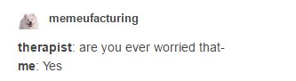
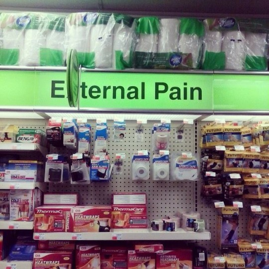
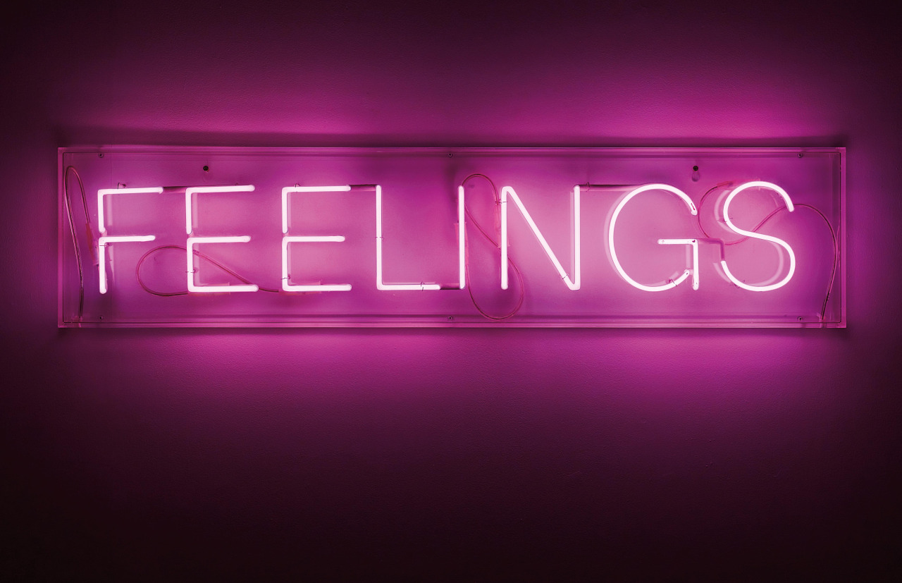
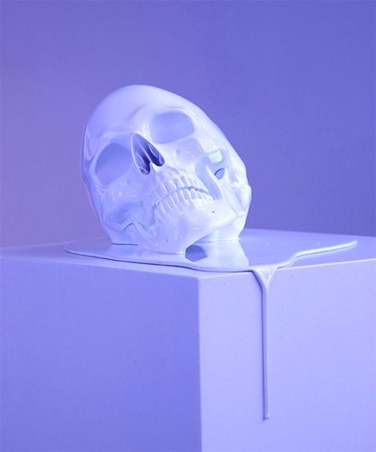
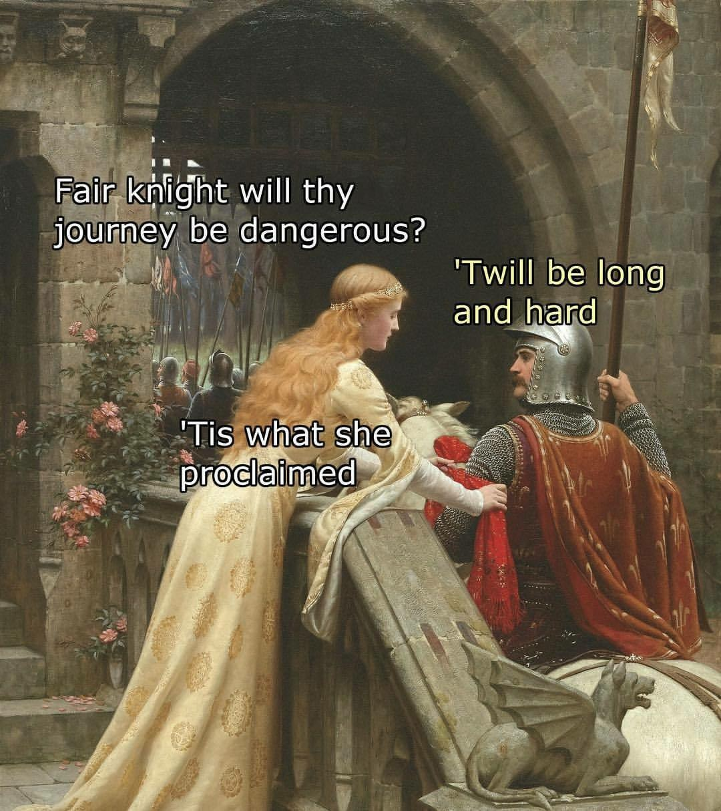

Here are five pictures that describe me as a person

Did you think I said I was a warrior? No, no, I'm afraid you misheard, I am a worrier.

The first Noble Truth in Buddhism proclaims that life is suffering, and I agree with that philosophy

I have a lot of those

I like morbid things, especially ones that also represent my gradually approaching emotional meltdowns

a) I believe that the best things about humanity is that people have always been "like this," including dumb jokes, memes, etc., so I enjoy adaptations of modern memes into other time periods and vice versa, b) I love any kind of language play, and c) I like "That's what she said" jokessee the rest of the images